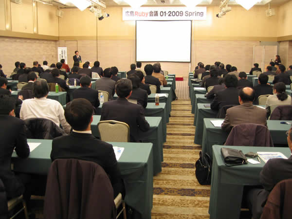

RegionalRubyKaigi レポート (08) 広島 Ruby 会議 01
RegionalRubyKaigi レポート (08) 広島 Ruby 会議 01
書いた人: にしゅぅ と こまつ
はじめに
 2009/3/11 に、広島 Ruby 会議 01 が開催され、予定人数を超えるご参加を頂きました。
今回は特に Ruby の知名度の低い広島において、ビジネスユーザ向けにご案内の声をかけさせて頂いた事や平日開催ということもあって、スーツで来場して頂いた方が多く、ちょっと他の Ruby 会議とは趣の違うビジネスイベント的な雰囲気でした。
広島 Ruby 会議 01 について
- 名称
- 広島 Ruby 会議 01 - 2009 Spring
- 日時
- 2009/3/11(水) 14:00 〜 17:30 (開場: 13:30)
- 会場
- 八丁堀シャンテ鯉城の間 (広島市中区上八丁堀 8-28)
- 主催
- NPO 法人ひろしまオープンソフトウェアコンソーシアム、株式会社広島ソフトウェアセンター、中国経済産業局
- 後援
- 日本 Ruby の会
- 参加費用
- 無料
- 公式タグ
- hiroshimarubykaigi01
- 参加者数
- 109 人
プログラム
「Ruby とはなにか、どう接すべきか？」(新井俊一 - 有限会社 メロートーン)
福岡から Rubyist 九州の新井さんにお越しいただき、Ruby (そして Rails) を利用した案件を手がけてきた経験をふまえて「Ruby とはなにか、どう接すべきか？」についてお話し頂きました。このセッションは、もともとは「リアルビジネスに於ける Ruby の魅力」という題目の予定でしたが、資料を作成している間に方向性が変わり、内容にあったタイトルに変更したいという事で、当日に急遽変更となりました。
Ruby の言語的な特徴としては関数型言語と Perl と Java のようなオブジェクト指向言語のいいとこ取りをしたような言語であるけど、もっと本質的な事は、コードを書く事へのストレスを少なくして、何より「プログラミングが楽しくなる事」。Ruby という言語が「愛される」理由、数々の有名なプログラマーが魅了され、Ruby を使うようになった理由はそこにあるのかもしれない。プログラムの煩雑な部分を減らし本質的な処理の核心に時間を割ける事で、ストレスを軽減しているとのこと。今までに接してきたプログラマの方々の言葉を借りて、新井さん流「Ruby の魅力」のオンパレードとなりました。
実際の開発現場ではクライアントの要望や様々な条件により Ruby を選ぶ事ができなかったり、既に仕事に使ってる言語から切り替えるリスクなどの障壁も多く、そんなに簡単にはいかない。けれど、自分が日々の業務でちょっとしたこと (簡単なバッチ処理やテキスト処理など) を実現するために使うツールとしては Ruby はとても良いものなのではないか? 開発の本流に乗れなくとも、既に活躍できる場はたくさんでてきている。また、Ruby はアジャイルな開発スタイルへの対応がしやすい言語でもある、とのことでした。
Ruby をこれから始めようという参加者も多く、Ruby の魅力について新井さんの経験を元に話して頂けて、Ruby の本質的な事(タイトル通り Ruby とはなんなのか、どう接するといいのか、そして Ruby を使って何が変わるのか)が、よく伝わったと感じました。
「Rails だけじゃない！まだある Ruby の世界」(伊尾木将之)
日経ソフトウェアでの Ruby の連載でも知られている伊尾木さんより、Ruby の普及の一因になった Web アプリケーション開発のフレームワーク Ruby on Rails について、そして Rails だけでなく他にもある数々の Ruby 製ソフトウェアを紹介して頂きました。
2006 年頃から話題になって急速に利用されるようになっていったフレームワーク Rails は MVC モデルのフレームワークで、その Model 部分を担当する ActiveRecord をはじめとした構成は、Ruby の機能を効果的に使い、CoC (Convention over configuration) のキャッチフレーズとともに簡単なルールをもとにした手法で人気を集めたとのこと。持ち込みのノートパソコンでは、Rails アプリの立ち上げのデモ。実務として利用していない人にとっては、噂には聞いていても実際に動くまでの流れを一通り解説付きで見ておく良い機会になりました。また、単に Rails の良い点だけでなく一般的に批判を受けている点や、昨今の Rails 対抗フレームワークについても紹介、解説いただきました。
後半 (といっても様々な話題につっこんで話してもらっていて、時間が……) は伊尾木さん自身の感想も交えながら、Rails 以外のフレームワークや各種のライブラリについての紹介でした。途中、O/R Mapper の紹介では Sequel に思い入れのある新井さんがちょっと乱入して解説するなど、少し時間をオーバーするまで、魅力ある Ruby の周辺について目一杯語って頂きました。
「地域企業に於ける Ruby 活用事例のご紹介」(バブ日立ソフト (株) 中国事業所松江サテライトラボ 所長 坂田真一)
バブ日立ソフトの坂田さんからは、Ruby の概要から島根などでの Ruby を使ったシステム構築の事例までを一連の流れでお話を頂きました。
バブ日立ソフトは「しまね OSS 協議会」に参加していて、Ruby だけでなく OSS の交流や情報交換を図っており、島根県松江市にサテライトラボを開設、松江オープンソースラボをはじめとした Ruby 技術者と交流、松江だけでなく本社のある広島でのセミナー開催などの活動をしているとのことです。Ruby 関連の開発事例としては、松江ラボだけでなく他の拠点である関東事業所と連携をとっての開発といった、比較的大きな案件も行ってきたとのことでした。
ビジネスとして動いている案件がまだまだ事例として少ない現状で、今後もこういった話題が増えてくるといいですね。
おわりに
広島は中国地方では大きな都市であるにもかかわらず、あまり Ruby のコミュニティ活動が盛んではなく、地味な活動が続いていました。これを機に、今後は広島でも Ruby の知名度の向上やコミュニティ活動、ビジネスにも裾野を広げて行けたらと期待しています。
スピーカーの方々、お手伝い頂いたスタッフの皆様、ご参加頂いた皆様、ありがとうございました。
著者について
にしゅぅ
観葉植物のネット販売とシステム作りの人。
こまつ
株式会社メディアフロントの人。